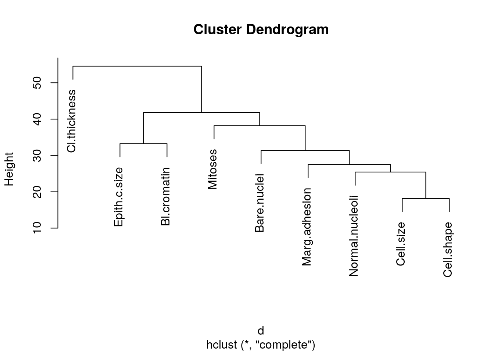

As the power of predictive models grow, everyone with a large data set wants to see what predictive modeling can do for them. But what do we even mean by “large”? In the world of predictive models, “large” must mean at least many more rows (data cases) than columns (features). How many more cases per feature? Well, that depends… mostly on your choice of model. A rule of thumb I use is 20:1 cases to features, but more cases is always better.
At this point, you may be wondering why you simply cannot throw your entire dataset with 100 cases and 20 features into your favorite model of choice: random forest, neural net… Predictive models work by finding common cases and grouping them, but when you have lots of features the odds of having any two similar cases starts to deteriorate. This is known as “the curse of dimensionality”.
## Which Features to Remove
First, let’s not overlook the low tech solution. If you have extensive familiarity (read: “are a subject expert”) with the data set and question of interest, chances are you already have a good idea of which features will be potentially useful and which won’t. Use your knowledge!
You have now reduced your features but you need more reduction! Some options are hierarchical clustering, principal component analysis, and tree regression. We will look at each of these in turn using the Wisconsin Breast Cancer dataset available in the package ‘mlbench’ and assume that we want to predict whether the cancer is benign or malignant.
library(mlbench)
data(BreastCancer)
knitr::kable(head(BreastCancer), caption = "mlbench: Wisconsin Breast Cancer Dataset")| Id | Cl.thickness | Cell.size | Cell.shape | Marg.adhesion | Epith.c.size | Bare.nuclei | Bl.cromatin | Normal.nucleoli | Mitoses | Class |
|---|---|---|---|---|---|---|---|---|---|---|
| 1000025 | 5 | 1 | 1 | 1 | 2 | 1 | 3 | 1 | 1 | benign |
| 1002945 | 5 | 4 | 4 | 5 | 7 | 10 | 3 | 2 | 1 | benign |
| 1015425 | 3 | 1 | 1 | 1 | 2 | 2 | 3 | 1 | 1 | benign |
| 1016277 | 6 | 8 | 8 | 1 | 3 | 4 | 3 | 7 | 1 | benign |
| 1017023 | 4 | 1 | 1 | 3 | 2 | 1 | 3 | 1 | 1 | benign |
| 1017122 | 8 | 10 | 10 | 8 | 7 | 10 | 9 | 7 | 1 | malignant |
We want to cluster only the potential features. Therefore, we need to remove the “Id” column, which is a label identifier for the patient or case number, and “Class”, the classification that we are interested in predicting. Also, we will remove any cases with missing values; we removed 16 cases with missing values. We later might want to investigate why there are missing values for those 16 cases.
cancer <- na.omit(subset(BreastCancer, select = -c(Id, Class)))
nrow(BreastCancer)-nrow(cancer)## [1] 16We will use the function ‘hclust’ which clusters the \(x\) (or row) variable. Therefore, we need to make the feature columns into row variables, which we do by transposing the data. Note that clustering applies a distance measure to the rows and groups rows by how small the dissimilarity is. Thus in distance measurements, scale matters, so we first want to scale our columns.
m.cancer <- as.matrix(sapply(cancer, as.numeric))
m.cancer <- t(m.cancer)
m.cancer <- scale(m.cancer)Now that are data is prepared, we calculate the distance matrix (using Euclidean distance here) and cluster. Then we will visualize the output as a tree.
d <- dist(m.cancer, method = "euclidean")
clustree <- hclust(d)
plot(clustree)